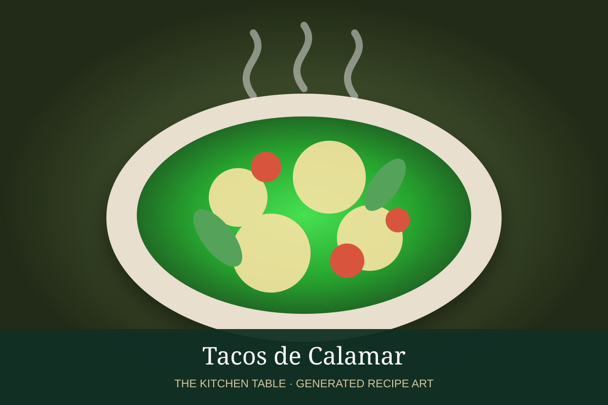

← Back to all recipes
SEAFOOD · MEXICAN
Tacos de Calamar
Quick-seared squid with garlic, chile, lime, and cilantro in warm tortillas.
30 minMakes 10 tacos

Photo: Serious Eats
Ingredients
- 1 1/2 lb cleaned squid
- 2 tbsp olive oil
- 3 garlic cloves
- 1 serrano
- Juice of 1 lime
- Salt
- 10 tortillas
- Cilantro
- Salsa verde
- Avocado
Preparation
- Pat squid very dry.
- Sear quickly in a smoking-hot skillet.
- Add garlic and serrano briefly.
- Finish with lime and salt.
- Serve in tortillas with cilantro, salsa verde, and avocado.